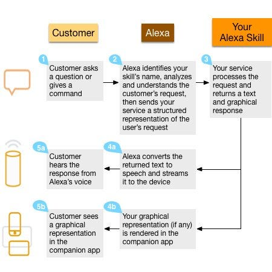

P2P or master-salve chatbot-to-chatbot ?
Hi Pelumi! Interesting points; I agree and we already exchanged few tweets about a futuristic vision of a bot-to-bot (sort of p2p) converse…

Hi Pelumi!
Interesting points; I agree and we already exchanged few tweets about a futuristic vision of a bot-to-bot (sort of p2p) converse (I hypotized a return of something like web services (…failed architecture, I admit) for bots “cooperative” machine to machine services:
What you call Meta Chatbot — A chatbot ‘router’ (and I’d call “master-slave” , just joking) appears to me an architecture more faisible now; in a sense, maybe Amazon Alexa is exactly in this way, with Skills plug-in ecosystem:
Concerning natural languages conversational software (aka chatbots), and specifically about vertical versus General AI: I agree about the fact many companies claim to supply some sort of mysterious “AI/machine learning” engines (proprietary cloud platforms often), but until now is not to clear (to me) if these software contains real machine learning (or are just baeysian clasifiers ;-) ? ). Maybe IBM Watson Dialog contains a machine learning features? To be verified (my duty).
About domain-specific I think that if domain is really “vertical”, so a retrieval-based (or call I call“rule based pattern matching engine) like great Bruce Wilcox’s ChatScript dialog flow language, could be a starting point for a possibile integration with some machine learning (a simple metalanguage for dialog flow design by linguistics, domain experts + a deeplearning subsystem for inferences ?) … some notes here:
What do you think ?
Thanks again for your article!
respect
giorgio
Originally published on Medium.